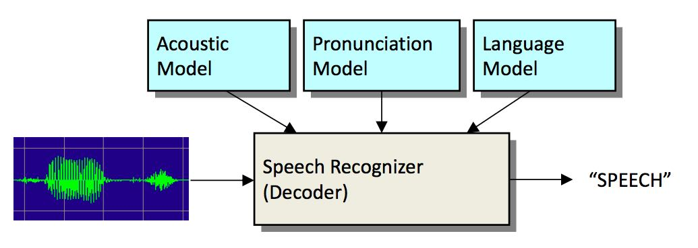
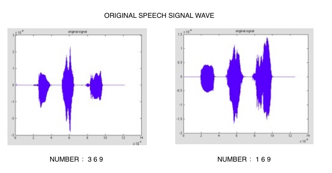
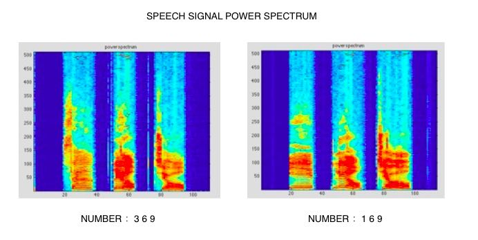
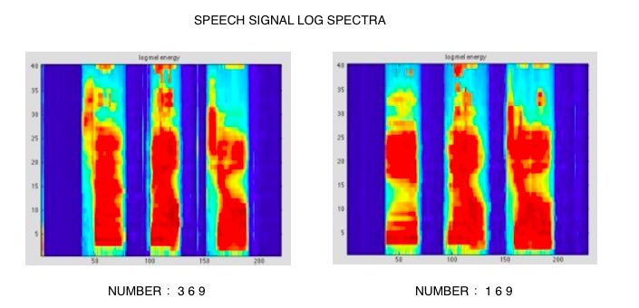
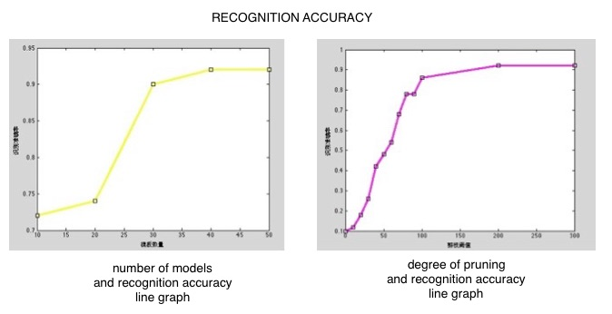

Class Project
2015/03 - 2015/06
program develop
C++
MATLAB
description
Speech recognition system is a project in course Speech Recognition System. Students who chose this class have to develop a simple speech recognition program according to the knowledge taught in this course.
part 1. capture speech data
I captured the speech signals in 16-bit resolution, mono channel and a sampling rate of 441000. The speech segments were written to a file in Microsoft PCM wav format. Then, using MATLAB to show the wave of my speech data.
part 2. computing MFCC from audio
Using the speech data captured in the part 1 to compute power specturm and log spectra of the speech. Then, visualize both spectro graphically with MATELAB.
 The pictures show that although the speeches of same digit may have different wave, the different speeches of same digit have the same power specturm and Log spectra. We can easily recognize with our eyes. Because the pronunciation of different figure has distinct pattern.
part 3. HMM-based recognition
Use the segmental K-means procedure to train a HMM for each of the digits(0 to 9). Assume each state to have a single Gaussian distribution, and the HMM for each digit to have 5 states. Recognize the 5 test utterances using the HMM models and report recognition accuracy.
THE END
BEAUTY DIARY